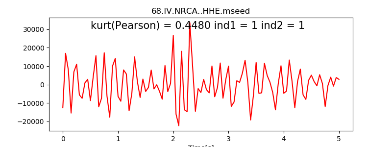
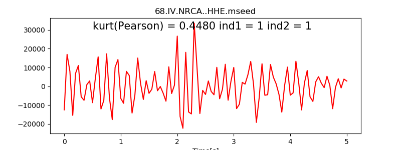

3. Tutorial¶
This tutorial is designed to give you an overview of the capabilities and implementation of the PyMPA Python package.
3.1. Downloading Seismological Data¶
To download seismological data from EIDA (European Integrated Data Archive) servers: Data from broad band seismic stations are available from many European Institutions. To download seismological data from EIDA (European Integrated Data Archive) servers and inventory data in STATIONXML format many examples can also be found in ObsPy.
PyMPA requires, continuous data and stations inventories. EIDA servers can easily release data from permanent networks and the corresponding inventories. The examples in the subdirectory input.download_data.dir show the python scripts that allows the download.
In the case your data come from other sources, PyMPA through ObsPy libraries is able to manage most of the seismological data formats (MSEED, SAC, SEISAN, SEGY, etc..). An inventory data file including station information needs to be created by modifying an existing StationXML file.
PyMPA does not use databases and prefers to store single channel daily continuous data in archieves or subdirectories.
Executable files:
download_data.py (https://github.com/avuan/PyMPA37/tree/master/input.download_data.dir/download_data.py)
download_inventory.py (https://github.com/avuan/PyMPA37/tree/master/input.download_data.dir/download_inventory.py)
(download_data) download data
3.2. Create Templates¶
(create_template) create templates
A Python script create_templates.py is used to trim templates from continuous data and inventories stored in an archive. Generally, we use travel times to cut events before and after S-wave arrivals. Thus, a reference 1D velocity model is needed. Trimmed waveforms have to be carefully checked to evaluate the effectiveness of S-wave travel time calculations. Take care that a high sampling rate could result in memory consumption and prolonged times of execution. Input data should be decimated a priori accordingly with your needs and availability of cores. Check the example for running create_templates.py at https://github.com/avuan/PyMPA37/tree/master/input.create_templates.dir
Executable file:
create_templates.py (https://github.com/avuan/PyMPA37/tree/master/input.create_templates.dir/create_templates.py)
Input parameters:
#Line 1 -- list of stations
#Line 2 -- list of channels
#Line 3 -- list of networks
#Line 4 -- Lowpass frequency
#Line 5 -- Highpass frequency
#Line 6 -- Trimmed Time before S-wave
#Line 7 -- Trimmed Time after S-wave
#Line 8 -- UTC precision
#Line 9 -- Continuous data dir
#Line 10 -- Template data dir
#Line 11 -- Processing days list
#Line 12 -- Zmap catalog
#Line 13 -- Starting template
#Line 14 -- Stopping template
#Line 15 -- Taup Model
AQU CAMP CERT FAGN FIAM GUAR INTR MNS NRCA TERO
BHE BHN BHZ
IV MN
2.0
8.0
2.5
2.5
6
24h
template
lista1
templates.zmap
26
27
aquila_kato
Note that input and output file names, inventories, template catalogs, velocity models are recalled also in the next steps.
3.3. Check Template Quality¶
(template_check) select good templates
Evaluating template quality allows to input only a good signal to noise ratio avoiding artifacts resulting in unwanted detections. The selection is based on Kurtosis method (https://docs.scipy.org/doc/scipy/reference/generated/scipy.stats.kurtosis.html) supposing that the waveform is simmetrically trimmed at the first S-wave arrival. Kurtosis evaluates if the time distrbution of amplitudes is simmetric or not excluding data having a low signal to noise ratio. Peak amplitudes at the beginning or in the signal coda are unwanted and a selection is also made to exclude them.
Check examples running test_kurtosis1.py at https://github.com/avuan/PyMPA37/tree/master/input.template_check.dir After running kurtosis based selection, templates are separated in two subdirectories “bad”(red waveforms see figure below) and “good” (black waveforms see figure below)

 

{kind=link}
{kind=link}

{kind=link}
Executable python scripts:
template_check1.py at https://github.com/avuan/PyMPA37/tree/master/input.template_check.dir/template_check1.py (performs on waveform)
template_check2.py at https://github.com/avuan/PyMPA37/tree/master/input.template_check.dir/template_check2.py (performs on the absolute values of waveform)
3.4. Calculate Travel Times¶
(calculate_ttimes) calculate travel times
Travel time calculation is based on Java TauP Toolkit as implemented in ObsPy (https://docs.obspy.org/packages/obspy.taup.html) Travel times are needed for synchronization to obtain a stacked cross-correlation function. It is supposed that trimmed templates are stored in ./template directory. The same reference 1D velocity model used for trimming templates is needed.
Executable file:
calculate_ttimes.py at https://github.com/avuan/PyMPA37/tree/master/input.calculate_ttimes.dir/calculate_ttimes.py
Input parameters:
#Line 1 -- list of stations
#Line 2 -- list of channels
#Line 3 -- list of networks
#Line 4 -- Lowpass frequency
#Line 5 -- Highpass frequency
#Line 6 -- Trimmed Time before S-wave
#Line 7 -- Trimmed Time after S-wave
#Line 8 -- UTC precision
#Line 9 -- Continuous data dir
#Line 10 -- Template data dir
#Line 11 -- Processing days list
#Line 12 -- Zmap catalog
#Line 13 -- Starting template
#Line 14 -- Stopping template
#Line 15 -- Taup Model
AQU CAMP CERT FAGN FIAM GUAR INTR MNS NRCA TERO
BHE BHN BHZ
IV MN
2.0
8.0
2.5
2.5
6
template
ttimes1
lista1
templates.zmap
26
27
aquila_kato
Note that input and output file names, inventories, template catalogs, velocity models are recalled also in the next steps.
3.5. Running PyMPA¶
Template matching code, using cross-correlation based on well located events. The code is embarassingly parallel and different templates/days can be run on different cores. We do not provide the scripts to parallelize jobs preferring to leave to the user to find the best strategy to accomplish the task. We generally prefer to distribute the workload by using Slurm.
Executable files:
pympa.py (working on daily chunks and with a reduced number of channels). Chunking daily data results in MAD calculated on the working time window.
Input parameters:
Input parameters are described line by line in parameters24 file
# input parameters for runnig 27 version
# line1 = stations available,
# line2 = channels available,
# line3 = networks available,
# line4 = low bandpass filter frequency,
# line5 = high bandpass filter frequency,
# line6 = sample tolerance in detecting maximum cft amplitude for each channel,
# line7 = cross-correlation threshold to be overcome by cft,
# line8 = min number of channels overcoming the cross-correlation threshold,
# line9 = template duration(s),
# line10 = UTCDateTime.DEFAULT_PRECISION (number of digits considered in fractions of seconds),
# line11 = string variable containing the directory name for continuous 24h waveforms,
# line12 = string variable for templates' directory,
# line13 = string variable for travel times directory,
# line14 = filename for day list to process,
# line15 = filename for zmap catalog,
# line16 = template start number,
# line17 = template stop number(if line16==0 and line17==0 all templates are processed,
# line18 = multiplying factor for MAD to determine threshold
# line 19 = multiplying factor to remove daily cft channels with std greater than (average std from all channels * factor at at line 19)
# line 20 = multiplying factor to remove daily cft channels with std smaller than (average std from all channels * factor at at line 20)
# line 21 = maximum number of templates to be used in template matching (choice is made preferring the closest channels)
# line 22 = number of chunks per day (1=86400s, 2=43200, 3=28800, 4=21600, 6=14400 etc... icreasing the factor allows reducing memory consumption)
APEC ATBU ATCA ATCC ATFO ATLO ATPC ATPI ATSC ATVO BADI FOSV FRON MURB NARO PARC PIEI PE3 SSFR
EHE EHN EHZ HHE HHN HHZ
IV
3.0
8.0
6
0.35
6
5
6
24h
template
ttimes
lista1
templates.zmap
200
203
8
1.5
0.25
12
6
3.6. Output Processing¶
(output.process_detections) controls multiple detections in short time windows
A bash script calling python code performs the catalog sythesis. Some templates could concur to the same detection. The detection showing the highest threshold value is preferred in a fix time window (e.g. 6 seconds).
Executable file:
bash script postproc37.sh
process_detections.py at https://github.com/avuan/PyMPA37/tree/master/output.process_detections.dir/process_detections.py
Input parameters:
# - Line 1 - FlagDateTime (Enter 1 for timestamp format (2009-03-30T21:59:43.616111Z) or Enter 0 for having seconds in a day (for plotting))
# - Line 2 - Flag_cc (1 to have returned the best results in terms of average cross-corr using the sample tolerance, 0 results at sample tolerance 0)
# - Line 3 - Input file
# - Line 4 - UTC precison used in time
# - Line 5 - window_length (half time window for searching unique events)
# - Line 6 - min_threshold (threshold used in parameters24 for detecting events, threshold * MAD)
# - Line 7 - min_nch (minimum number of channels to overcome the setup cc value in parameters24 e.g. 0.6)
1
1
./dcat
6
3.0
8.0
7
3.7. Verify Detections¶
(output.verify_detection) for visual verification of events
Produce graphics windows showing the continuous data overlapped by templates events at the detection time.
Executable file:
verify_detection.py at https://github.com/avuan/PyMPA37/tree/master/output.verify_detection.dir/verify_detection.py
Input parameters:
# Line 1 -- list of stations
# Line 2 -- list of channels
# Line 3 -- list of networks
# Line 4 -- Lowpass frequency
# Line 5 -- Highpass frequency
# Line 6 -- Trimmed Time before S-wave
# Line 7 -- Trimmed Time after S-wave
# Line 8 -- UTC precision
# Line 9 -- Continuous data dir
# Line 10 -- Template data dir
# Line 11 -- Ttimes data dir
# Line 12 -- Zmap catalog
# Line 13 -- Starting detection
# Line 14 -- Stopping detection
# Line 15 -- Half of the visualized time window in sec
# Line 16 -- Taup Model
# Line 17 -- Flag_Save_Fig (0 = show, 1 = save figure)
# Line 18 -- Flag_Read_Stats (0 = no stats, 1 = read stats)
# Line 19 -- Tolerance in time between outcat origin time and stats
ATBU ATFO ATLO ATMI ATPC ATPI ATSC ATVO BADI CDCA MURB
EHE EHN EHZ HHE HHN HHZ
IV MN
3.0
8.0
2.5
2.5
6
24h
template
ttimes
templates.zmap
0
5
10
ato
1
1
0.05
3.8. References¶
Shelly, D. R., G. C. Beroza, and S. Ide (2007). Non-volcanic tremor and low frequency earthquake swarms, Nature 446, 305–307.
Peng, Z., and P. Zhao (2009). Migration of early aftershocks following the 2004 Parkfield earthquake, Nature Geosci. 2, 877–881.
Yang, H., L. Zhu, and R. Chu (2009). Fault-plane determination of the 18 April 2008 Mount Carmel, Illinois, earthquake by detecting and relocating aftershocks, Bull. Seismol. Soc. Am. 99, 3413–3420.
Kato, A., K. Obara, T. Igarashi, H. Tsuruoka, S. Nakagawa, and N. Hirata (2012). Propagation of slow slip leading up to the 2011 Mw 9.0 Tohoku-Oki earthquake, Science 335, 705–708.
Zhang, M., and L. Wen (2015). An effective method for small event detection: Match and locate (M&L), Geophys. J. Int. 200, 1523–1537.
Krischer, L., T. Megies, R. Barsch, M. Beyreuther, T. Lecocq, C. Caudron, and J. Wassermann (2015). ObsPy: A bridge for seismology into the scientific Python ecosystem, Comput. Sci. Discov. 8, no. 1, 014003, doi: 10.1088/1749-4699/8/1/014003.